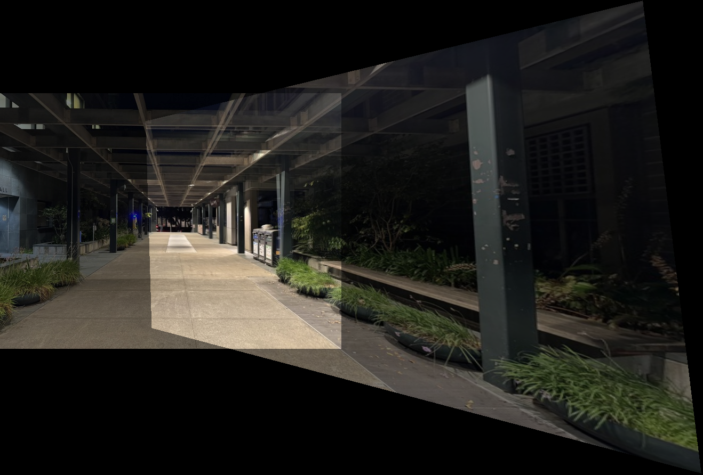

Part 1: Shooting Pictures and Defining Correspondences
The first part of this project was to shoot pictures. I was kind of lazy about this so I just shot some pictures of my room and of Soda.
The most important part about this step is to make sure that when taking the pictures, we should only rotate the camera around its axis,
and not do any translations. This is because otherwise it becomes impossible to find a common surface to which we can project the
images onto, and there will be no affine transformation. I shot three images for each mosaic, making sure to keep at least 40-70% image
overlap for each camera rotation. I then defined correspondences between sequential images using the tool from project 3.
Soda Left to Center Image CorrespondencesSoda Center to Right Image CorrespondencesDrawer Left to Center Image CorrespondencesDrawer Center to Right Image Correspondences
Part 2: Calculating Homographies
Using the correspondences defined above, we can calculate an affine transformation matrix to go from one image to another. Below is
an image explaining how we calculate the transformation matrix given the correspondence points.
I did the exact same thing as Alec Li (Fall 2023 CS 180) and thought it would be a waste to rewrite everything, so I'm
just using his explanation since it looks nice.
Technically, since there are 8 unknowns, we only need 4 correspondences because each correspondence generates two equations as shown above. However, this could lead to
an unstable transformation matrix calculation, so it's better to have an overdetermined system which is why I defined 8 correspondences between my images. I calculated the
homographies from the side images to the center images, since I'm using the center image as my reference
Part 3: Warping Images
The next task is to actually apply the homographies to the relevant images and warp them into the space of the reference image.
First, we need to calculate the bounding box of the warped image. To do this, we apply the homography to the corners of the original image,
and find the difference between the max(x) - min(x) and max(y) - min(y) to determine the minimum bounding box.
Then, because some of the warped corners might be negative/out of frame, we want to translate this bounding box so that the warped image's top
left corner will be at 0,0. The offset is just min(x) and min(y) so we simply subtract that offset from the warped corners
From here, it's essentially the same process as project 3, instead of warping each triangle, this time we can create a polygon using the warped
and shifted corners and then interpolate the color values accordingly. So it's like we're warping the entire image at once, rather than triangular patches.
We also add a mask to make sure that we are only interpolating from pixels that exist in the original image, and everything outside that mask
is going to be 0 (black pixel).
Here are some examples of warped images:
Original Left Soda ImageWarped Left Soda ImageOriginal Right Soda ImageWarped Right Soda Image
Part 4: Image Rectification
To test out my warp function, I rectified some objects by selecting the corners of the objects and then setting the correspondences
to some box like (0,0), (100, 0), (100, 100), (0, 100). From here I calculated the relevant homography for my warp function.
Original Photo of Clairo PosterRectified Photo of Clairo PosterOriginal Photo of Diagonal Snack BoxRectified Photo of Diagonal Snack Box
Part 5: Blending Warped Images into a Mosaic
This part required us to align the warped images with the reference image and create a mosaic. My naive approach was just to:
Combine the right image with the reference image. First, calculate a bounding box for this "right mosaic" by finding the max
between the warped image's size and the reference image shifted by the right image's offset.
Place the warped right image at the top right corner of the bounding box
Translate the reference image from the top right corner using the right image's offset
Place the reference image at the specified place (overlapping with part of the warped right image)
Now, we need to add the warped left image to our right mosaic. We first calculate the bounding box for the
entire mosaic.
Shift the warped left image down by left offset - right offset.
Shift the right mosaic right be -left offset.
I create a "left mosaic" too, just to see whether that might be easier.
This naive approach didn't work because the overlap was not exactly aligned, so it created weird artifacts and you could see
edge lines from the images. Additionally, because I was simply overlaying the images on top of each other,
some parts of the image were brighter than others. See the examples below:
(Bad) Soda Left Mosaic

(Bad) Soda Right Mosaic(Bad) Soda Mosaic
To solve these issues, I used Laplacian blending from project 2 instead of just overlaying the images on top of each other.
For the mask, I just had a binary mask where the split point was in the middle of the overlapping region of the images.
This greatly improved the quality of the mosaic and removed almost all artifacts. Here are 3 examples below:
Soda Mosaic with Laplacian Image BlendingDrawer Mosaic with Laplacian Image BlendingRoom Mosaic with Laplacian Image Blending